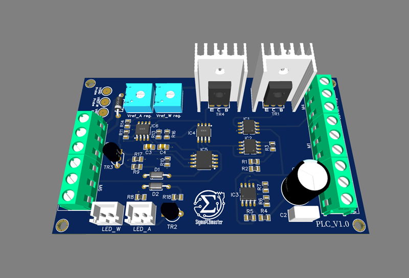
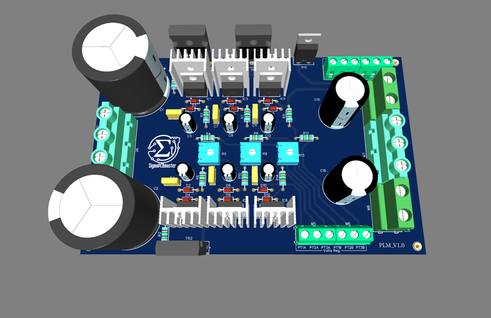

"""<div class="modules">
  <div class="module-card">
    
    <h3>PLS – Power Logic Supply</h3>
    <ul>
      <li>Generazione delle tensioni di servizio (±15V, +12V, +5V)</li>
      <li>Raffreddamento proporzionale alla temperatura (NTC + ventola)</li>
    </ul>
  </div>
  <div class="module-card">
    
    <h3>PLC – Power Logic Control</h3>
    <ul>
      <li>Gestione soglie di corrente e potenza</li>
      <li>Controllo corrente tramite operazionale differenziale</li>
      <li>Distacco carico con intervento a relè</li>
      <li>LED di segnalazione limite raggiunto</li>
    </ul>
  </div>
  <div class="module-card">
    
    <h3>PLM – Power Logic Main</h3>
    <ul>
      <li>Regolazione di tensione con tre coppie di LM317/LM337 in cascata</li>
      <li>Transistor di potenza su dissipatore</li>
    </ul>
  </div>
</div>"""